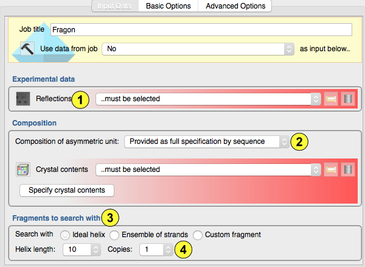
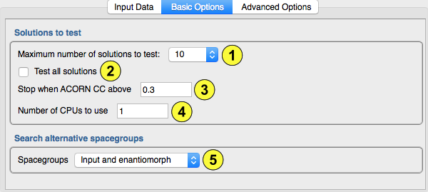
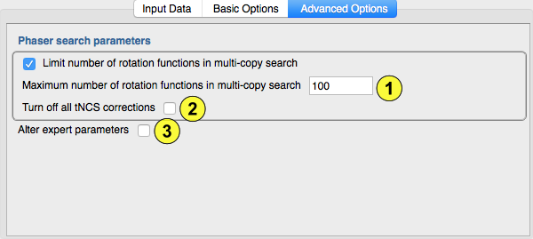
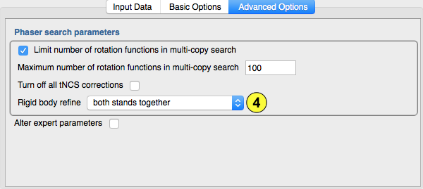
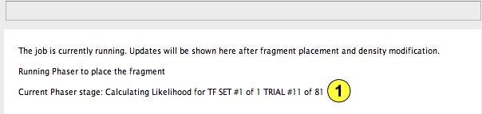
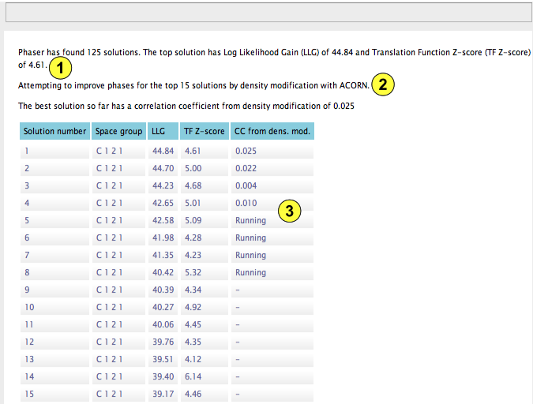
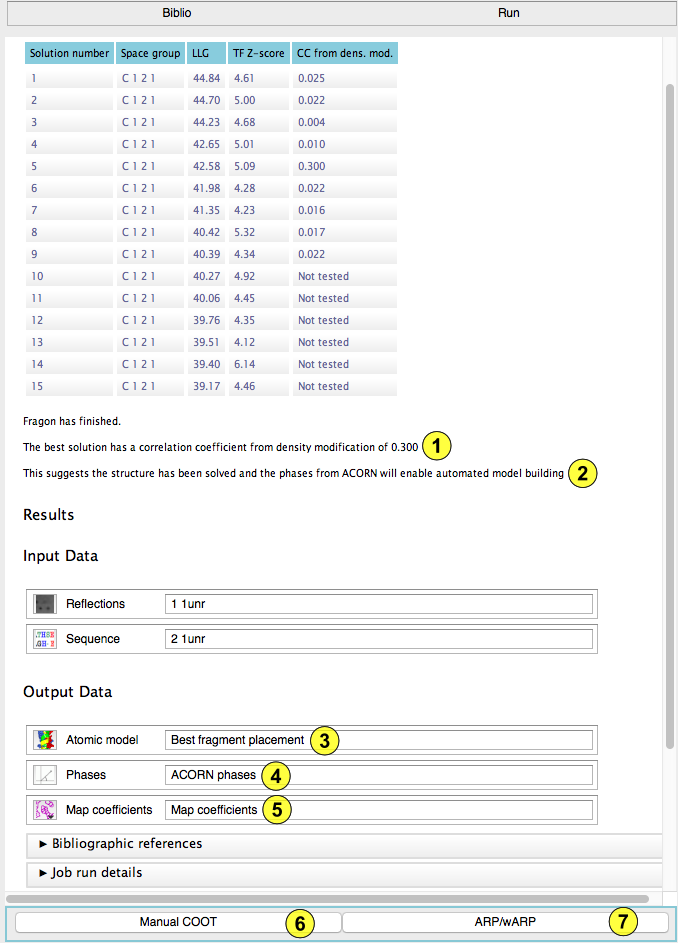

The Fragon task uses the program Phaser to place fragments of secondary structure such as ideal alpha helices or ensembles of beta strands. These fragments are likely to be highly similar to some regions of the target structure but will only correspond to a tiny fraction of the protein. Hence the signal to noise ratio will be very low. This means that the log-likelihood gain scoring used in Phaser will enrich the solution list with correctly placed fragments but will not be sufficient to discriminate correct from incorrect placements. Therefore, attempts are made to improved the poor starting phases calculated from each placed fragment by density modification with ACORN. If the phases improve sufficiently (monitored by a correlation coefficient) the the improved phases can be used for automated model building

First the experimental data must be selected (1). A set of observations is required.
The composition of the asymmetric unit must be defined (2) in one of two ways. Ideally you should provide the contents of the crystallographic asymmetric unit. This should have been entered in the Define AU contents task but can be entered here by clicking the "Specify AU contents" button and selecting one or more sequence file(s). Alternatively you can enter the estimated solvent content of the crystal.
There are three choices for the fragment to search with (3). Firstly, you can select an ideal poly-alanine helix of between 5 and 20 residues. Secondary structure prediction may help guide your choice but in general a few runs with lengths of 10, 12 and 14 residues is a good starting point.
Secondly, you can choose ensembles of single beta strands with between 3 and 5 residues or from a number of ensembles of pairs of parallel and antiparallel 5 residue ideal beta strands with varying angles between the strands.
Thirdly, you can input your own choice of starting fragment. Any model that works in Phaser is suitable.
Next you need to choose the number of copies of the fragment to search for (4). In general, unless you are certain that your structure contains multiple (straight) helices, one or two copies is a good starting point. If you know there are multiple copies of the protein in the asymmetric unit then search for that number of copies of the fragment. Although there are limits to the size that the search tree can grow to in Phaser, searching for multiple copies when the signal to noise does not increase as subsequent fragments are placed will result in very long Phaser run times.

You can specify the maximum number of potential Phaser solutions to test (1). Unless you select the option to test all solutions (2), Fragon will stop once a solution with a correlation coefficient (CC) from density modification above the value specified here (3) is found.
The Phaser search uses OpenMP parallelisation and multiple potential solutions can be tested with density modification in parallel. Set the number of CPUs to use here (4). If you have access to a multi-CPU machine with lots (>8) of cores it is probably most efficient to run several Fragon tasks searching for different fragments as the OpenMP speed-up of Phaser (usually the slowest step) decreases above about 8 parallel threads.
Finally you can choose to search alternative space groups, the input space group only or, when relevant, both hands of enantiomorphic space groups (the default) (5).

The default options for all of these parameters have been successfully used on several large test-sets so changing them is not advised unless you have exhaustively tried different search models.
One option you may wish to adjust is the purging of solutions between successive fragment searches (1). The fewer partial solutions carried forward, the faster the Phaser run. However, when there are multiple partial solutions this means that the previous search did not find a clear solution so pruning too aggressively may lead to failure. 100 potential solutions seems a good compromise and has been well tested.
If Phaser detects translational non-crystallographic symmetry (tNCS) and the search fails you may want to try again with this (2) option selected.
You can alter more parameters in the Phaser search by selecting this (3) option. No further help is given as if you think you need to alter these options you will know what they do.

When searching with one of the supplied ensembles of beta strands by default the pair of strands is refined as a single rigid-body. You can choose (4) to further rigid-body refine each strand separately or split the strands in half around the central C-alpha of the strands and refine each half separately.

Whilst Phaser is running to place the fragment(s), the report will look like this. The current Phaser stage is shown here (1). Depending on how easily Phaser is able to place the fragments this stage may take a while.

When Phaser has placed the fragments. The report will look like this. The number of solutions found by Phaser and the log-likelihood gain (LLG) and translation-function Z-score (TF Z-score) for the top solution are reported (1). If Phaser found more solutions than requested only the solutions up to the number requested will be tested with density modification with ACORN (2). This table (3) lists the LLG and TF Z-score for these solutions. As the results of density modification with ACORN are obtained this table shows which solutions are currently being tested and will update with the correlation coefficient (CC) from density modification.

Once all the solutions have been tested, or a solution with a correlation coefficient (CC) from density modification above the value specified has been found, Fragon will stop. The best CC (1) and if the value suggests the phases will be sufficiently good for automated model building (2) is reported.
The output data for the best scoring solution comprise: The coordinates for the placed fragment (3), the phases after density modification (4) and map-coefficients suitable for viewing in Coot (5).
Follow-on tasks include manual model building (6) - usually to inspect the quality of the map - and automated model building (7) .